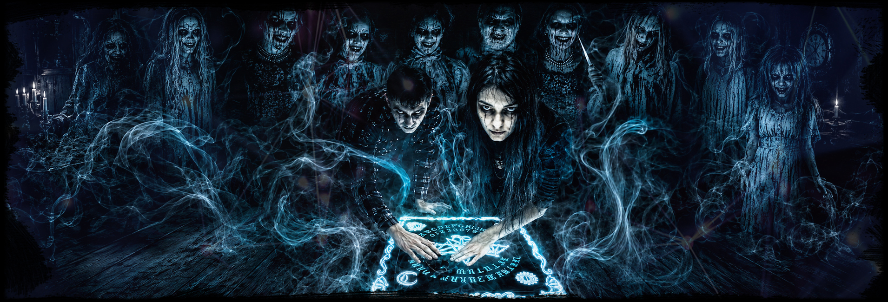
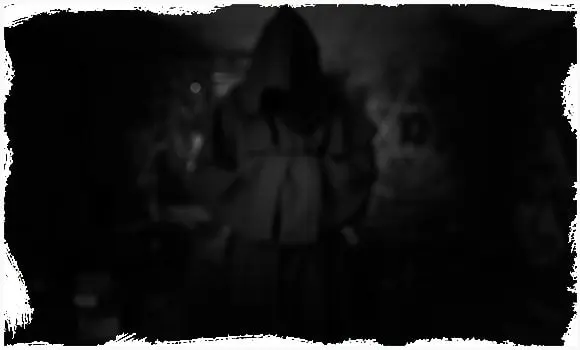
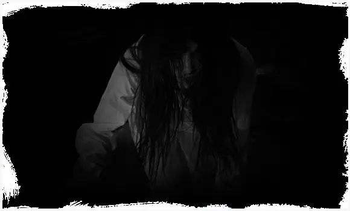
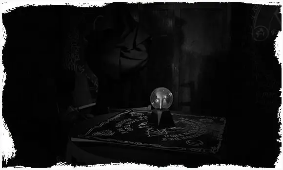
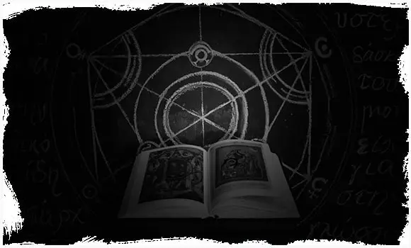

От 1500 руб./чел. Итог зависит от даты, состава команды и дополнительных услуг.

Иркутск, мк-н Юбилейный, 17
Экзорцизм
Мистический хоррор-квест в Иркутске: темная история, тревожные звуки, актерские элементы и задания для команды. Формат подходит для подростков 12+, взрослых компаний и дня рождения.
12+
4-20 игроков
1 час
мистика
от 1500 руб./чел.
Что происходит в квесте
Экзорцизм - мистический хоррор-сценарий для тех, кто любит темные истории, напряженную атмосферу и ощущение, что рядом есть что-то невидимое.
Команда исследует локацию, ищет подсказки, проходит задания и постепенно приближается к обряду. Здесь важны внимательность, спокойствие и умение действовать вместе, когда свет, звук и декорации начинают давить сильнее.
Формат можно обсудить заранее: для новичков сценарий делают мягче, а для опытной команды добавляют больше напряжения, актерских элементов и контактности.
Главные особенности
- мистическая история и ритуальная атмосфера;
- темная локация, спецэффекты, звук и свет;
- актерские элементы и настраиваемая контактность;
- формат для подростков, взрослых и компании друзей;
- можно добавить чайную зону после прохождения.
Запишись на игру
Выберите дату и свободное время. При бронировании укажите город и количество игроков.
Цены и условия
Коротко о том, что обычно спрашивают перед бронированием: цена, возраст, игроки, длительность, адрес, чайная зона, актеры и уровень страха.
Рекомендуемый возраст - 12+. Для подростков можно настроить мягкий уровень страха.
Обычно 4-20 человек. Для большой компании лучше уточнить формат заранее.
Игра длится около 1 часа. После прохождения можно добавить чайную зону.
Иркутск, мк-н Юбилейный, 17. При бронировании администратор подскажет удобный ориентир и свободное время.
Подходит для дня рождения, встречи друзей или продолжения праздника после игры.
В сценарии могут быть актерские элементы, внезапные появления и контактность.
Интенсивность, контактность, громкость и свет можно согласовать до старта.
Кому подойдет Экзорцизм
Хороший выбор, если вы хотите
- мистический квест, а не только резкие хоррор-сцены;
- темную атмосферу, обряд, загадки и напряжение;
- формат для компании друзей или дня рождения;
- сценарий, где уровень страха можно обсудить заранее.
Экзорцизм хорошо подходит командам, которые любят мистику, темные истории и ощущение постепенного нарастания тревоги.
Для дня рождения сценарий можно совместить с чайной зоной: сначала команда проходит квест, затем остается обсудить самые напряженные моменты и продолжить праздник.
Атмосфера квеста
Фотографии и карточки сценария показывают настроение Экзорцизма без спойлеров и ключевых моментов.




Схема проезда
Квест Экзорцизм в Иркутске проходит на площадке IQuest по адресу мк-н Юбилейный, 17. Ниже - карта, чтобы заранее посмотреть маршрут.
Иркутск
мк-н Юбилейный, 17
Иркутская площадка для хоррор-квестов, праздников и игры с чайной зоной после прохождения.
Открыть в Яндекс КартахВидео с игры
Короткие ролики без спойлеров и ключевых моментов: только атмосфера, реакции команды и ощущение мистического хоррора.
Экзорцизм в Иркутске на Юбилейном, 17
В Иркутске Экзорцизм подойдет тем, кто ищет мистический квест на Юбилейном с темной атмосферой, актерскими элементами и возможностью подобрать уровень страха под подростков или взрослых.
Площадка находится по адресу мк-н Юбилейный, 17. Это удобно для компаний, которые хотят пройти страшный квест в Иркутске, отметить день рождения и после игры добавить чайную зону.
Перед бронированием лучше назвать дату, возраст игроков, количество участников и желаемый уровень страха. Так проще подобрать свободное время и комфортный формат прохождения.
Локальная информация
- Иркутск: мк-н Юбилейный, 17.
- Телефон для уточнения времени: 8 (901) 666-888-1.
- Можно добавить чайную зону для дня рождения или компании.
- Уровень страха, контактность и ограничения обсуждаются до старта.
Экзорцизм или другой хоррор-квест
Если вы выбираете между страшными сценариями, сравните формат по городу, актерам, уровню страха и ситуации, для которой подходит квест.
| Квест | Город | Актеры | Страх | Подходит для |
|---|---|---|---|---|
| Экзорцизм | Иркутск, мк-н Юбилейный, 17 | по сценарию | мистический | любители темных историй и ритуальной атмосферы |
| Оно | Иркутск | да | популярный хоррор | первый страшный квест, компания, день рождения |
| Психоз | Ангарск | да | настраиваемый хоррор | компания, день рождения, опытные игроки |
Кому Экзорцизм может не подойти
Лучше предупредить заранее
- если игроку нельзя сильный стресс, темноту или громкие звуки;
- если в команде есть дети младше рекомендованного возраста;
- если нужен полностью спокойный формат без актерских сцен;
- если есть медицинские ограничения, беременность или выраженная тревожность.
Экзорцизм - мистический хоррор-квест, поэтому важно заранее обозначить ограничения команды. Если игроки впервые идут на страшный сценарий, можно выбрать мягкий режим.
Если нужен праздник без сильного напряжения, лучше рассмотреть детские и семейные форматы, лазертаг, NERF или приключенческие квесты без хоррора.
Что обычно отмечают игроки
Игроки чаще всего запоминают постепенное нарастание тревоги и ритуальную атмосферу.
Сценарий работает через ожидание, спецэффекты и ощущение присутствия рядом.
Экзорцизм подходит для дня рождения, вечерней встречи друзей и любителей мистики.
Частые вопросы
С какого возраста можно на Экзорцизм?
Рекомендуемый возраст - 12+. Для подростков можно заранее обсудить мягкий уровень страха.
Сколько длится игра?
Основная игра длится около 1 часа. После прохождения можно добавить чайную зону.
Можно ли пройти квест на день рождения?
Да. Экзорцизм можно выбрать для дня рождения или компании, которая любит мистику и страшные истории.
Где находится Экзорцизм в Иркутске?
Адрес квеста: Иркутск, мк-н Юбилейный, 17. При бронировании администратор подскажет свободное время и ориентиры.
Выбрать время для квеста Экзорцизм
Позвоните или оставьте бронь на сайте: администратор подскажет свободное время на Юбилейном, 17 и подходящий уровень страха для вашей команды.
Позвонить 8 (901) 666-888-1